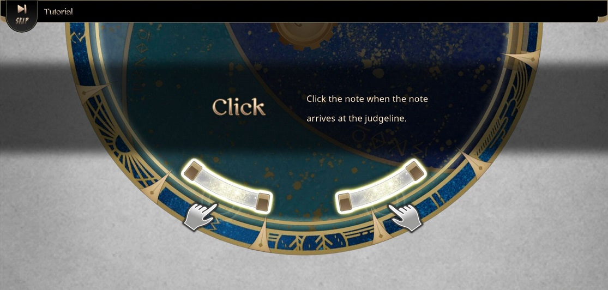
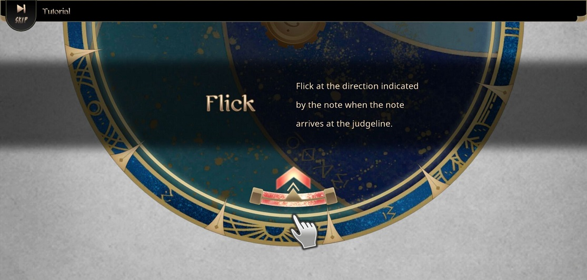
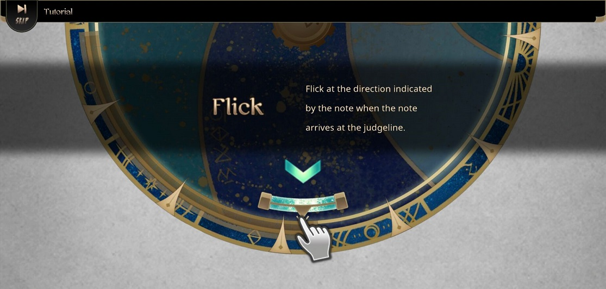
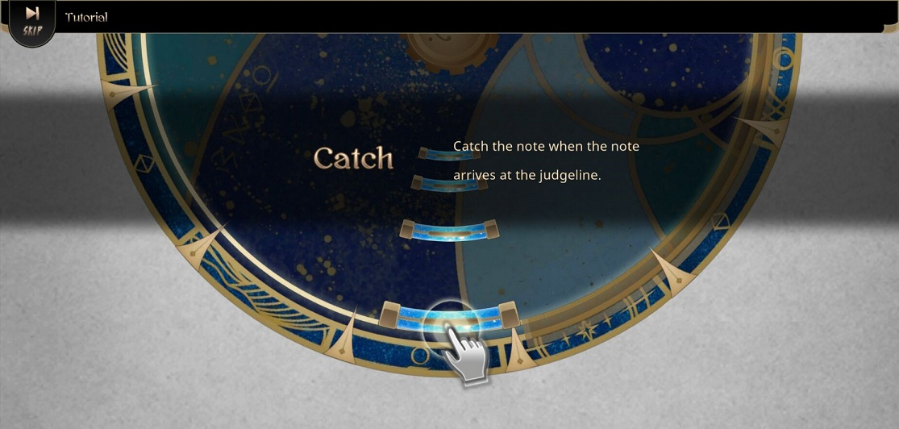
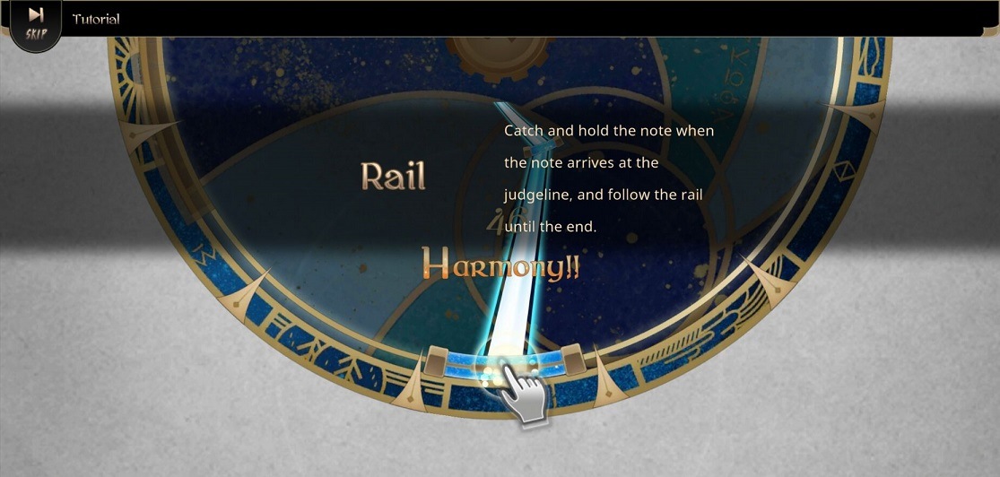

游戏系统
铺面难度
游戏中有Whisper、Acoustic、Ultra、Master四个难度可选，其中Master难度需要通关Ultra难度并达成A或以上评价解锁。目前Whisper等级由1到6，Acoustic等级由5到10，Ultra等级由8到13，Master等级由10到15。MariannE：Ultra14；Stasis和SolarOrbit：Ultra15，Master16
游戏操作
- CLICK: 当note到达判定线时单击。
 - FLICK（向内）&FLICK（向外）: 当note到达判定线时依照指示方向滑动。

 - CATCH: 将手指置于note前直接接取。此种音符没有Tune判定。
 - RAIL: 手指按住note并按形状滑动直至尾端。此种音符没有Tune判定。
实际上该音符是由数个判定点组成的，只需在判定范围内进行单击或保持按住即可。

由于游戏在一个会移动、转圈、鬼畜的盘子上进行（判定线就是盘子的外圈），下落方向也可能是360度中的任意方向，因此该游戏上手难度比其他固定轨道的下落式音游要高。
2019年4月1日，Lanota发布了新的打击音，打开后打击音效会非常鬼畜！
游戏判定和结算
游戏判定有三种：Harmony、Tune、Fail。结算界面有四种结果：Tuned、Purefied、All Combo和Perfect Purified，其中达成Perfect Purified需要击中谱面所有Harmony判定（即100万分），即收歌。游玩一首曲目还有两种模式可选:Tune和Purify（分别简称蓝盘子和红盘子），其中使用Purify模式游玩曲目时若获得连续15个Fail判定会直接结束游戏，游戏期间每11个combo可以回复1个Fail。不同得分会得到不同评级，其中98万分~100万分为L，95万分~98万分为S，90万分~95万分为A，70万分~90万分为B，60万分~70万分为C，60万分以下为D。
| 判定等级 | 误差时间(ms) |
|---|---|
| Harmony | 0~60 |
| Tune | 61~120 |
| Fail | 漏键 |